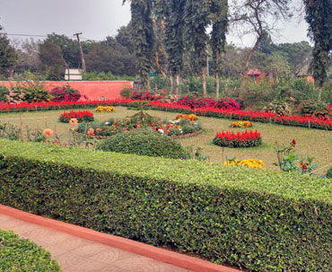

The State Botanical Garden spreads over an area of 75 ha. It is situated in the sylvan settings of the moist deciduous forest of the sprawling green Nandankanan sanctuary hemmed between two wetlands. The Botanical Garden was established in
the year 1963 and was under the management of Horticulture Department. The management of the State Botanical Garden was transferred to Nandankanan on 1st August 2006. One would be definitely impressed by the nature’s symphony and the
exquisite touch of the wilderness here. This is one of the pioneering plant conservation and nature education centre of the State. The State Botanical Garden is sure to provide memorable experience to the green enthusiasts. The State
Botanical Garden is situated inside Nandankanan wildlife sanctuary. Kiakani Lake with an area about 25 ha. is located inside the State Botanical Garden.
Infrastructure
The Botanical Garden covers 24 different satellite gardens and parks spread all over undulating landscapes mixed with natural vegetation and meadows. The important facilities available in the Botanical Garden are F.R.H, picnic pindies,
interpretation centre etc.
Glass House
A spacious glass house of 2013 sqft. has been developed for housing succulent plants. A variety of succulant adds beauty to the Glass House. One can enjoy blooming ornamental plants from the period from November to March.
Cacti House
A 1080 sqft. polyhouse houses important species of cactii plants. A rich collection of more than 1200 cacti are available in the Cacti House.
Bonsai
A rich collection of more than 300 numbers of bonsai of 55 varieties are available.
Philodendron House
More than 2000 numbers of 5 varieties of philodendron are available.
Dry Garden
A garden of xerophytes plants has been developed over an area of 0.65 Acre in front of Glass House. The entire garden has been designed with loose stone work to give it exclusive look of dry zone which attracts the visitors.
Green House
A state of art green house of 5200 Sq ft. houses the cultivars of 60 species of indoor plants like Aglaonema, Philodendron, Calathea, Cordyline, Diffenbachia, Spathophyllum, Peperomia, Monstera, Hemigraphis etc. .
Butterfly Park
Butterfly Park, an interesting option among visitors has been developed over an area of 36,590 sqft. The garden has a unique landscape with 6400 butterfly dependant plants. The garden has one cascading waterfall with 170 sqft. flowing
water channel, fountains and artistic bridges. One can sight more than 81 species of butterfly here. The visitor will get the fragrance of beautiful flowers and feel the beauty of flying jewels of nature. The newly created Butterfly Park was
opened to the visitors in February, 2014.This Butterfly Park also contain a butterfly interpretation centre. The Centre spreads over an area of 800 sqft has been developed near the Butterfly Park. The newly opened centre has colourful
pictorial display boards to disseminate information on butterfly to the visitors. The main objective of the centre is to provide latest information on various aspects of butterfly. A short documentary about butterfly is an added attraction.
The Interpretation centre was opened to the visitors in March, 2015.
Rosarium
It is one of the richest collections of 1200 Rose plants belonging to 55 varieties grown over an area of 1.5 acres of land. The garden is liked by the visitors most and has maximum foot flow during the winter.
Orchid House
The largest orchid house of the State spreads over an area of 5000 sqft. and displays more than 1000 orchids of 57 varieties belonging to 37 species. One can enjoy the orchid in bloom round the year displaying various colour of nature.
Medicinal Garden
A well laid medicinal garden spread over an area of 2.26 acres which displays of rich collection of 225 species of trees, shrubs and herbs.
Japanese Garden
A state of art Japanese Garden in Tsukiyama-niwa style with flowing streams and other typical features is a star attraction. It covers an area of 0.50 acres.
Mughal Garden
Mughal Garden covering an area of 1.01 ha. has a cascade of flowing water and flowering plants both seasonal and perennial on both side give a look of gardens of Mughal era. The garden is liked mostly by the young people and has maximum
foot flow during winter.
Evolution Garden
The newly constucted Evolution Garden covering an area of 0.77 ha. gives complete information about the evolution system of plant kingdom. The one way path takes a visitor from lower plant groups like Algae, fungi, Bryophyta, Pteridophyta
to evolution of large plant groups like Gymnosperm and Angiosperms. The concept of such garden is very informative for the students and researchers.
Heritage Garden
The Heritage Garden covering an area of 1.2 acres is situated adjoining to the Evolution garden with natural rock and old Banyan trees. A Tulsi (Ocimum sanctum) garden containing six varieties of Tulsi plant with models of monk, live size
cow and tribal hut are the attraction of the garden.
Landscape Garden
It is a model landscaping having different elements like lawn, trees and shrubs spread over an area of 1.6 acres. 1000 trees of different species have been planted to maintain the rhythm.
Palm Garden
Palm garden is an amazing site to see varieties of common and rare palms. A collection of 29 varieties of beautiful palms have been planted over an area of 15000 sqft .One designed water body along with 15000 sqft grass carpet has been
developed inside the Palm Garden for the public.
Bougainvillea Garden
One Bougainvillea garden has been developed over an area of 21400 sqft. inside the State Botanical Garden. More than 1000 Bougainvillea plants of different colours (8 varieties) have been displayed in the garden. A series of creepers
raised on the back of the garden adds beauty to the park.
Arboretum
The Arboretum spread over an area of 4 ha. has been established with collection of more than 234 species (from 49 families) found in the eastern Zone forests. A minimum of 10 nos. of each species has been planted with signage displayed. A
network of path has been made through the plantation which will be an ideal walk way for botanization for the trainees and students.
Hibiscus Garden
A garden has been developed over an area of 11000 sqft. located in between glass house and Palm garden. More than 130 numbers of plants of 27 varieties have been planted in the garden.
Carnivorous Plant Garden
The garden established inside the state botanical garden covering an area of 800 sqft. is intended to exhibit carnivorous plants. Nandankanan is 1st of its kind to display carnivorous Plants. The garden has been developed initially to
accommodate 4 species of carnivorous plants with provision of naturalistic landscape. It was opened to the visitors in March 2016.
Children's Park
A niche for the kids has been created within the natural setting by providing swings, merry-go-round, sliding chute etc. The gallery located nearby filled with ornamental plants enhances beauty of the Park.
Buddha Park
The park has been developed over an area of 12000 sqft. located by the scenic beauty of Kanjia Lake. It features a beautiful Buddha Statue as its centre place. Rain shelter, sit outs and ornamental flower beds are other attractions.
Artificial Zoo
Models of different animals are used to explain the ecological niche with an objective to generate awareness among the children.
Vision
To achieve the distinction of a progressive Botanical Garden.
Objectives
- Conservation, study and propagation of rare plants.
- Collection, documentation and maintenance of indigenous and exotic plant species and serve as a conservation and education center.
- Acclimatization and field evaluation of indigenous and exotic plants from various agro-climatic regions.
- Establishing herbarium of authentic specimen for identification of plants.
- Sale and exchange of seeds, plants and other planting materials to individuals and research institutions.
- Provide recreation facilities to the public in general and creating awareness on Biodiversity conservation.
State Botanical Garden is coming under Eco-sensitive Zone under Nandankanan Sanctuary. No meeting and conference involving the sound of high decibel shall be allowed inside Botanical Garden.